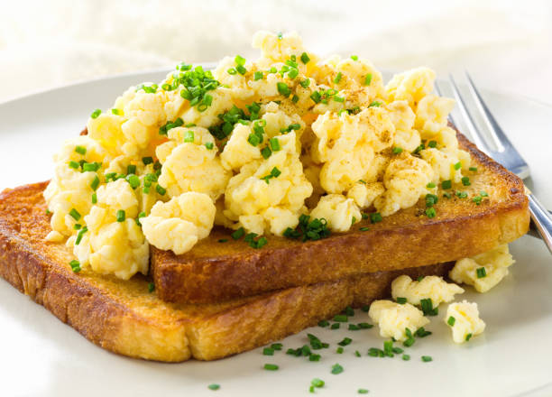

Deviled Eggs
TEasy to prepare appetizer!

Ingredients:
- 8 hard boiled eggs
- ¼ cup mayo
- ⅓ cup thick Greek yogurt, (Fage or Chobani recommended)
- 1½ teaspoons sweet pickle relish
- ½ teaspoon Dijon mustard
Instructions:
- Slice the eggs in half lengthwise and remove the yolks.
- In a small food processor, combine the egg yolks, mayo, yogurt, relish, and mustard and pulse until smooth. Season to taste with salt.
- Scoop the mixture into the egg white halves (or use a piping bag, if you prefer). Sprinkle with desired toppings.
Notes:
What kind of bread can be used for Egg Toast? Use your favorite kind! White, wheat, whole grain, rye, and pumpernickel will work in this recipe. Feeling fancy this morning? Use a croissant instead.
Optional toppings: chopped chives, celery seed, smoked paprika.